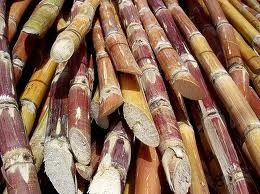

Origen del ron
No es inusual asociar esta bebida con los piratas y bucaneros. Y es que el vínculo ron - marina es muy fuerte, pues el ron fue el licor tradicional elegido por los marineros de la marina de guerra británica durante décadas. Pero, hablando del origen histórico del ron, cabe destacar que las rutas comerciales desde el Caribe al resto del mundo jugaron un papel primoridial en la expansión del ron, que se había convertido en la principal fuente de efectivo y crédito en la balanza de pagos coloniales. Actualmente y tras un largo período de expansión que acercó el ron a cada rincón del mundo, tanto el ron blanco como el ron dorado u oscuro se han convertido en un imprescindible de cualquier bar...
 Sed lacus. Donec lectus. Nullam
pretium nibh ut turpis. Nam bibendum. In nulla tortor,
elementum vel, tempor at, varius non, purus. Mauris vitae nisl
nec metus placerat consectetuer. Donec ipsum. Proin imperdiet
est. Phasellus
Sed lacus. Donec lectus. Nullam
pretium nibh ut turpis. Nam bibendum. In nulla tortor,
elementum vel, tempor at, varius non, purus. Mauris vitae nisl
nec metus placerat consectetuer. Donec ipsum. Proin imperdiet
est. Phasellus